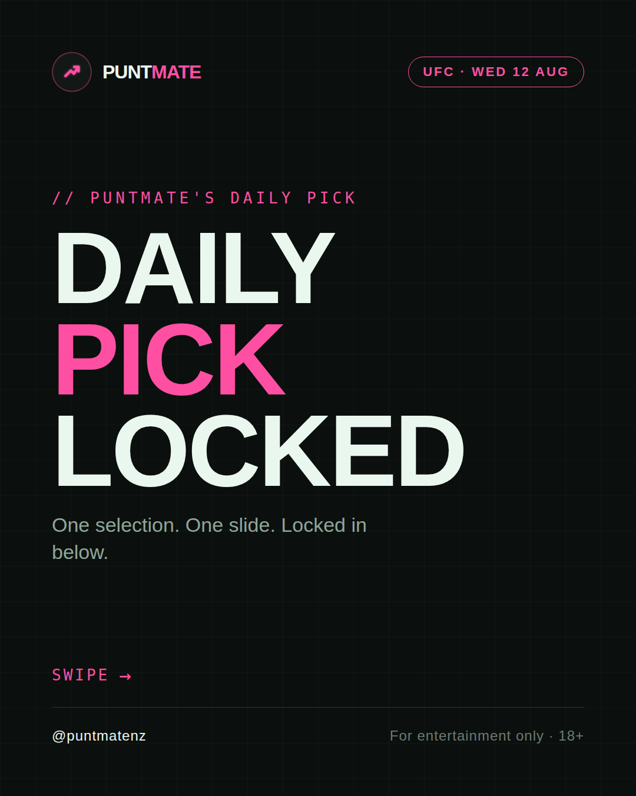
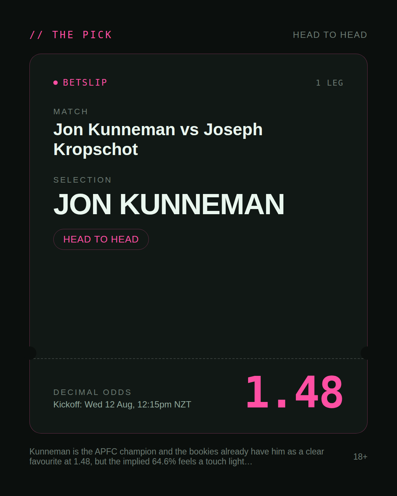
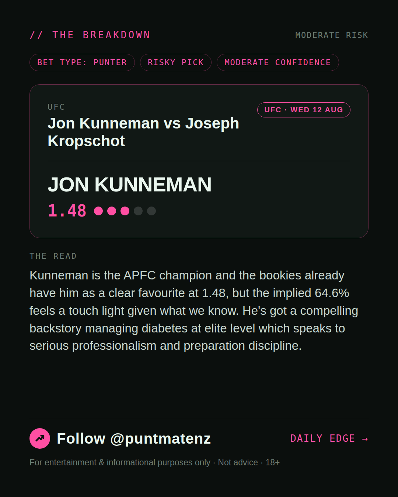
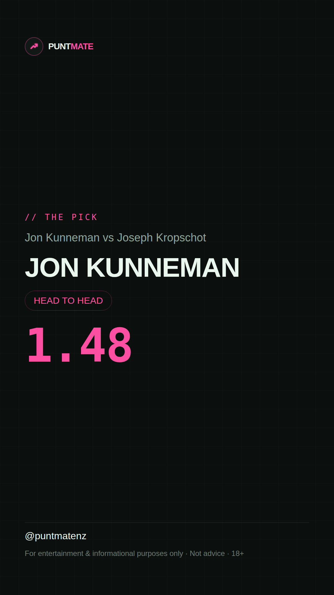

*🎯 PUNTMATE NZ — UFC* 🏟 Jon Kunneman vs Joseph Kropschot *PICK:* JON KUNNEMAN *ODDS:* 1.48 (Head to Head) *BET TYPE: PUNTER* _Kunneman is the APFC champion and the bookies already have him as a clear favourite at 1.48, but the implied 64.6% feels a touch light given what we know. He's got a compelling backstory managing diabetes at elite level which speaks to serious professionalism and preparation discipline._ ────────────────── 📲 Join Telegram for daily picks ⚠️ For entertainment & informational purposes only. Not advice. 18+.
🎯 UFC — Jon Kunneman vs Joseph Kropschot JON KUNNEMAN @ 1.48 (Head to Head) BET TYPE: PUNTER Solid touch here. Not a lock, but the value's real and the form backs it up. Kunneman is the APFC champion and the bookies already have him as a clear favourite at 1.48, but the implied 64.6% feels a touch light given what we know. He's got a compelling backstory managing diabetes at elite level which speaks to serious professionalism and preparation discipline. Follow for daily value picks → @puntmatenz ⚠️ For entertainment & informational purposes only. Not advice. 18+. #PuntmateNZ #SportsBetting #NZTAB #UFC
| has_pick | True |
| pick_id | 2026-08-11_Jon_Kunneman_vs_Joseph_Kropschot |
| run_id | 31535198100 |
| generated_at | 2026-08-11T20:56:03.279713+00:00 |
| post_date | 2026-08-11 |
| match | Jon Kunneman vs Joseph Kropschot |
| sport | mma_mixed_martial_arts |
| sport_label | UFC |
| market | Head to Head |
| selection | JON KUNNEMAN |
| odds | 1.48 |
| bet_type | PUNTER_BET |
| bet_type_label | BET TYPE: PUNTER |
| bet_type_reason | Solid touch here. Not a lock, but the value's real and the form backs it up. Kunneman is the APFC champion and the bookies already have him as a clear favourite at 1.48, but the implied 64.6% feels a touch light given what we know. He's got a compelling backstory managing diabetes at elite level which speaks to serious professionalism and preparation discipline. |
| classification | RISKY_PICK |
| risk | RISKY_PICK |
| confidence | MODERATE |
| confidence_label | MODERATE |
| final_explanation | Kunneman is the APFC champion and the bookies already have him as a clear favourite at 1.48, but the implied 64.6% feels a touch light given what we know. He's got a compelling backstory managing diabetes at elite level which speaks to serious professionalism and preparation discipline. |
| public_caution | Keep this one light — the value's there but so is the uncertainty. |
| theme | night |
| carousel_paths | ['data/review/2026-08-11_Jon_Kunneman_vs_Joseph_Kropschot/cover.png', 'data/review/2026-08-11_Jon_Kunneman_vs_Joseph_Kropschot/tip.png', 'data/review/2026-08-11_Jon_Kunneman_vs_Joseph_Kropschot/breakdown.png'] |
| carousel_urls | ['https://raw.githubusercontent.com/kingofthecastle24/puntmate/main/data/cards/2026-08-11_Jon_Kunneman_vs_Joseph_Kropschot_night_1_cover.png', 'https://raw.githubusercontent.com/kingofthecastle24/puntmate/main/data/cards/2026-08-11_Jon_Kunneman_vs_Joseph_Kropschot_night_2_tip.png', 'https://raw.githubusercontent.com/kingofthecastle24/puntmate/main/data/cards/2026-08-11_Jon_Kunneman_vs_Joseph_Kropschot_night_3_breakdown.png'] |
| story_path | data/review/2026-08-11_Jon_Kunneman_vs_Joseph_Kropschot/story.png |
| story_url | https://raw.githubusercontent.com/kingofthecastle24/puntmate/main/data/cards/2026-08-11_Jon_Kunneman_vs_Joseph_Kropschot_night_story.png |
| intended_platforms | ['telegram', 'instagram_feed', 'instagram_story', 'facebook'] |
| workflow_state | GENERATED |
| has_punter_multi | False |
| has_gambler_multi | False |
| has_degenerate_multi | False |